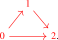
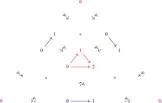
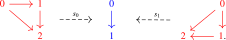

The previous section explained why one should expect \(\infty \)-categories to arise once equality is treated as structure rather than property. We now turn that heuristic picture into working syntax. We will do so in two steps. First we describe the ambient language of \(\infty \)-categories, functors, and identifications. Then we explain how the familiar internal notions of objects, morphisms, and commutative triangles can be recovered from this language by testing against a few small 1-categories.
1.2.1 Categories, functors and identifications
We start with the basic objects of this language:
Axiom A.1 (Categories and identifications).
- (1)
-
There are \(\infty \)-categories, denoted \(C,D,E\), etcetera. Among them there is a distinguished class of animae. There is an anima \(*\) called the one-point anima. For animae \(X\) and \(Y\), there is an anima \(X\times Y\) called their product.
- (2)
-
For \(\infty \)-categories \(C,D\), there are functors \(f\colon C\to D\), identity functors \(\id _C\), and composite functors \(g\circ f\colon C\to E\) for \(f\colon C\to D\) and \(g\colon D\to E\). Products of animae have projection functors \(\pr _X\colon X\times Y\to X\) and \(\pr _Y\colon X\times Y\to Y\). For functors \(f\colon T\to X\) and \(g\colon T\to Y\), there is a pairing \((f,g)\colon T\to X\times Y\). Every \(\infty \)-category \(T\) has a functor \(p_T\colon T\to *\).
- (3)
-
For parallel functors \(f,g\colon C\to D\), there is an anima \((f=g)\), called their anima of identifications. An identification \(\alpha \colon f=g\) is a functor \(\alpha \colon *\to (f=g)\), also called a point of this anima.
For points \(x,y\colon *\to X\) of an anima \(X\), we also write \((x=_X y)\) for their identification anima, in agreement with the notation of Section 1.1. Given two identifications \(\alpha ,\beta \colon *\to (f=g)\), the same construction gives an anima \((\alpha =\beta )\), allowing us to speak of identifications between identifications. We may iterate this as often as needed. In practice, we frequently leave the chosen identification unnamed.
The universal properties of the one-point anima and products of animae will be stated in Section 1.3; we have included some of their accompanying structure in the foundational language as it is used to state various coherence relations below.
Axiom A.2. The composition of functors is unital and associative through specified identifications: for \(f\colon C\to D\), \(g\colon D\to E\), and \(h\colon E\to F\), there are identifications \[ \lambda _f\colon \id _D\circ f= f,\qquad \rho _f\colon f\circ \id _C= f,\qquad \alpha _{f,g,h}\colon (h\circ g)\circ f= h\circ (g\circ f). \] Every functor \(f\) has an identity identification \(\id _f\colon f=f\). For parallel functors \(f,g,h\), there are functors \[ -\circ -\colon (g=h)\times (f=g)\to (f=h), \qquad (-)^{-1}\colon (f=g)\to (g=f), \] called vertical composition and inversion. Vertical composition is unital and associative through specified identifications, and inversion supplies two-sided inverses. These laws are identifications of functors on the relevant animae of inputs; for example, left unitality of vertical composition specifies an identification \(\id _g \circ (-) = (-)\) of functors \((f = g) \to (f = g)\).
Identifications can also be composed with functors on either side.
Axiom A.3. For parallel functors \(f,f'\colon C\to D\) and functors \(h\colon D\to E\), \(k\colon B\to C\), there are functors \[ h\star -\colon (f=f')\to (hf=hf'), \qquad -\star k\colon (f=f')\to (fk=f'k), \] called postwhiskering and prewhiskering. Given also \(g,g'\colon D\to E\), the two ways of pasting \(\sigma \colon f=f'\) and \(\tau \colon g=g'\) are identified: \[ (\tau \star f')\circ (g\star \sigma ) = (g'\star \sigma )\circ (\tau \star f). \] Either expression defines their horizontal composite \(\tau \ast \sigma \colon gf=g'f'\).
Remark 1.2.1. Since the operations on identifications introduced above are functors between animae, they act on identifications between identifications, and so on at every level.
We also assume various coherence laws relating these operations. For example, whiskering a composite of identifications agrees with the composite of the whiskered identifications. Similarly, whiskering an identification between functors is compatible with the unitors and associator. The unitors and associator themselves satisfy the usual triangle and pentagon identities.
These laws are themselves specified identifications. When a law takes an identification as an input, we view it as an identification between the respective two functors between identification animae. When several identifications occur as inputs, the source of both functors is a product of their identification animae. As a result, these laws are compatible with higher identifications of all inputs, and they can be applied to families by precomposition. For instance, the interchange law in Axiom A.3 is an identification between the two functors \[ (g=g')\times (f=f')\longrightarrow (gf=g'f') \] obtained by composing projections, whiskering, and vertical composition according to the formulas \[ (\tau ,\sigma )\longmapsto (\tau \star f')\circ (g\star \sigma ), \qquad (\tau ,\sigma )\longmapsto (g'\star \sigma )\circ (\tau \star f). \]
For the complete list of coherence laws, we refer to Section 1.2 of [Cisinski et al. (2026)]. Throughout the book, we use these laws implicitly, usually leaving the parentheses and the necessary associativity and unit identifications unwritten.
Definition 1.2.2. A commutative square of functors
consists of four functors \(f\), \(g\), \(h\) and \(f'\) together with a specified identification \(\alpha \colon h \circ f = f' \circ g\). A commutative triangle of functors
consists of three functors \(f\), \(g\) and \(h\) together with a specified identification \(\alpha \colon h = g \circ f\). We may similarly form commutative diagrams of identifications, and of identifications between identifications.
When applying a universal property, we must also account for the identifications in its input data. For example, an identification of two commutative squares must compare their chosen commutativity identifications, not just their four edges.
Definition 1.2.3. A functor \(f\colon C \to D\) is said to be an equivalence if there exists another functor \(g\colon D \to C\) and identifications \(\id _{C} = gf\) and \(\id _D = fg\). In this case we call \(g\) an inverse to \(f\).
Exercise 1.2.4. Show that a functor \(f\) is an equivalence if and only if it admits both a section (i.e., a \(g\) such that \(\id _D = fg\)) and a retraction (i.e. an \(h\) such that \(\id _C = hf\)), and that in this case we have \(g = h\).
Notation 1.2.5. It follows immediately from the previous exercise that if \(g\) and \(h\) are both inverses to \(f\), then there is an identification \(g = h\). When an inverse to \(f\) has been chosen, we denote it by \(f^{-1}\colon D \to C\).
Exercise 1.2.6. Show that if \(f\colon C \to D\) and \(f'\colon D \to E\) are equivalences with inverses \(g\colon D \to C\) and \(g'\colon E \to D\), then also the composite \(f'f\colon C \to E\) is an equivalence with inverse \(gg'\colon E \to C\).
Lemma 1.2.7. Equivalences satisfy the 2-out-of-3 property: given functors \(f\colon C \to D\) and \(g\colon D \to E\), if two of the three functors \(f\), \(g\) and \(gf\) are equivalences, then so is the third.
Proof. If \(g\) and \(f\) are equivalences, then so is \(gf\) by Exercise 1.2.6. If \(f\) and \(gf\) are equivalences, then we may rewrite \(g\) as the composite \(g = g \circ \id _{D} = g \circ (f \circ f^{-1}) = (gf) \circ f^{-1}\), so that \(g\) is the composite of two equivalences and hence itself an equivalence. A similar argument shows that \(f\) is an equivalence whenever \(g\) and \(gf\) are equivalences. □
Exercise 1.2.8. Show that equivalences of \(\infty \)-categories satisfy the 2-out-of-6 property: given functors \(f\colon C \to D\), \(g\colon D \to E\) and \(h\colon E \to F\) such that \(gf\) and \(hg\) are equivalences, also the functors \(f\), \(g\), \(h\) and \(hgf\) are equivalences.
Lemma 1.2.9 (Identifications and equivalences, Lemma 1.3.10 of [Cisinski et al. (2026)]). Prewhiskering or postwhiskering by an equivalence induces equivalences of identification animae. In particular, if \(u\colon A\to B\) is an equivalence and \(x,y\colon *\to A\), then \[ (x=y)\longrightarrow (ux=uy) \] is an equivalence.
Proof sketch. Choose an inverse to the given equivalence. Whiskering successively with the equivalence and its inverse is identified, using the coherence laws, with changing endpoints along the inverse identities. Changing endpoints is itself an equivalence, since it is inverted by changing endpoints along the inverse identifications. Applying the same argument to three successive whiskerings, the 2-out-of-6 property shows that whiskering with the original equivalence is an equivalence. The argument applies to both prewhiskering and postwhiskering. □
In particular, an equivalence transports prescribed identifications, and identifications between prescribed identifications. We will use this repeatedly to compare constructions defined by universal properties.
1.2.2 Objects, morphisms and commutative triangles
We now explain how to describe objects, morphisms, and commutative triangles inside an \(\infty \)-category. For this, we first include classical 1-categories in our language; a few small examples will serve as shapes for these notions.
Axiom B.1. Every classical 1-category \(C\) gives rise to an \(\infty \)-category, which we will abusively again denote by \(C\). Given 1-categories \(C\) and \(D\), every 1-functor \(f\colon C \to D\) of 1-categories gives rise to a functor of \(\infty \)-categories, and every \(\infty \)-functor comes from a 1-functor. Every natural isomorphism \(\alpha \colon f \xrightarrow {\cong } f'\) in the classical sense gives rise to an identification \(\alpha \colon f=f'\) of functors of \(\infty \)-categories. These assignments preserve composition of functors and send composition of natural isomorphisms to composition of identifications.
Example 1.2.10. In particular, every partially ordered set \((P, \leq )\) may be regarded as an \(\infty \)-category by taking \(\Hom _{P}(p,q)\) to be a singleton if \(p \leq q\) and empty otherwise.
Notation 1.2.11. For \(n \geq 0\), we write \([n]\) for the following linearly ordered set: \[ [n] := \{0 \leq 1 \leq \dots \leq n\}. \] For \(n \geq 1\) and \(0 \leq i \leq n\), we define the face map \(d_i\colon [n-1] \to [n]\) as the unique injective map of posets whose image leaves out \(i\). Similarly we define the degeneracy map \(s_i\colon [n + 1] \to [n]\) as the unique surjective map of posets that hits \(i\) twice.
Axiom B.2. The functor \(p_{[0]}\colon [0]\to *\) is an equivalence.
Thus a functor \([0]\to C\) may equally well be described as a functor \(*\to C\).
For \(0 \leq n \leq 2\), we denote the associated three \(\infty \)-categories again by \([0]\), \([1]\) and \([2]\). They may be displayed as follows:

The five face maps \(d_0,d_1\colon [0] \to [1]\) and \(d_0,d_1,d_2\colon [1] \to [2]\) and the relations between them may be displayed as follows:

The two degeneracy maps \(s_0,s_1\colon [2] \to [1]\) may be interpreted as the following ‘projections’:

Definition 1.2.12. Let \(C\) be an \(\infty \)-category.
- (1)
-
An object of \(C\) is a functor \(x\colon [0] \to C\);
- (2)
-
A morphism of \(C\) is a functor \(f\colon [1] \to C\). We write \(f(0)\) for its source/domain and \(f(1)\) for its target/codomain, which are defined as the following composites: \[ f(0)\colon [0] \xrightarrow {d_1} [1] \xrightarrow {f} C \qquadtext { and } f(1)\colon [0] \xrightarrow {d_0} [1] \xrightarrow {f} C. \] We will also write \(f\colon x \to y\) to indicate that \(f\) comes with identifications \(x = f(0)\) and \(y = f(1)\).
- (3)
-
A commutative triangle in \(C\) is a functor \(\sigma \colon [2] \to C\). We will frequently denote commutative triangles by
where \(f = \sigma \circ d_2\), \(g = \sigma \circ d_0\) and \(h = \sigma \circ d_1\). We will often leave commutative triangles unnamed, and only label their three edges.
Warning 1.2.13. While we may speak of objects of \(C\), we may not speak of a set of objects of \(C\)! (We will introduce the anima of objects in Axiom F below.)
Remark 1.2.14. We want to think of a commutative triangle \(\sigma \) as saying that \(h\) is a candidate composite of \(f\) and \(g\). Note that at this stage we do not yet say anything about the existence nor the uniqueness of composites; we get back to this in Section 1.4.2.
Example 1.2.15. Given an object \(x\) of \(C\), we define the identity morphism \(\id _x\colon x \to x\) as the composite \([1] \to [0] \xrightarrow {x} C\). Since the composites \[ [0] \xrightarrow {d_1} [1] \xrightarrow {s_0} [0] \qquadtext { and } [0] \xrightarrow {d_0} [1] \xrightarrow {s_0} [0] \] are identified with the identity functor \(\id _{[0]}\), we see that the source and target of \(\id _x\) are indeed identified with \(x\).
Exercise 1.2.16. Construct for every morphism \(f\colon x \to y\) commutative triangles in \(C\) of the form
Once composition of morphisms is available, this exercise will give the expected relations \(f = f \circ \id _x\) and \(f = \id _y \circ f\), see Lemma 1.4.8.